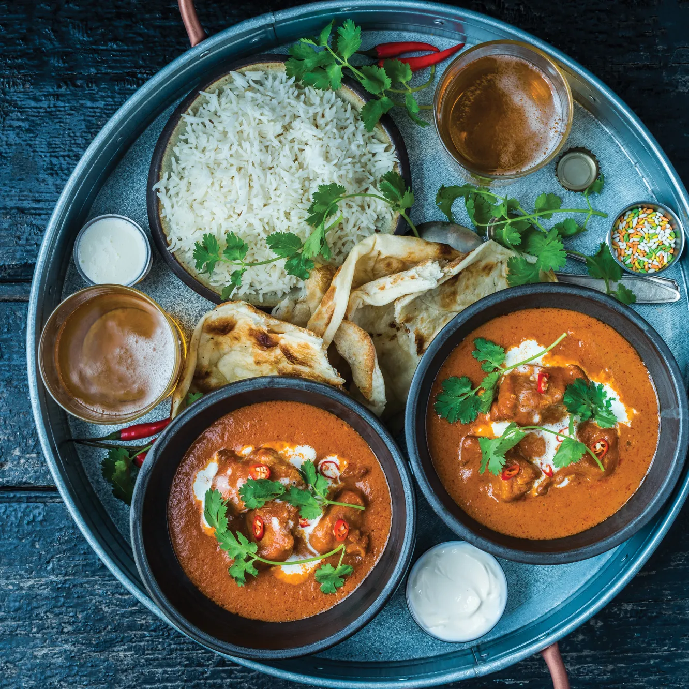
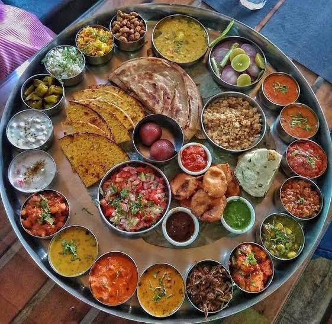
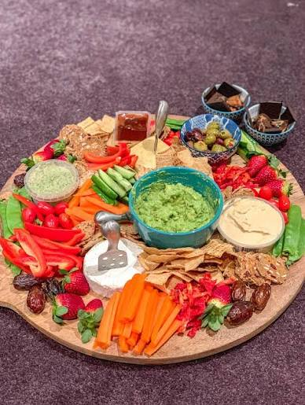
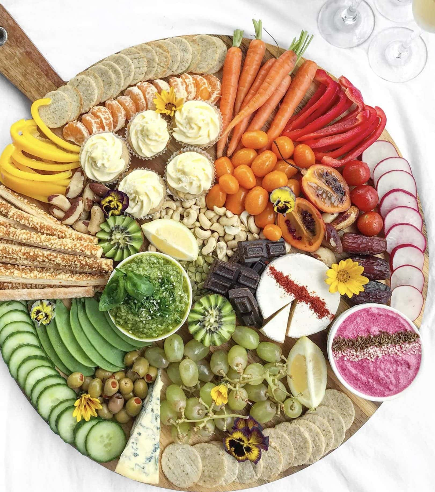

Discover our carefully curated selection of authentic Bangladeshi dishes. Each recipe has been perfected over generations and is prepared with the finest ingredients. From spicy curries to delicate desserts, our menu celebrates the rich diversity of Bengali culinary traditions.
All our dishes are cooked to order using traditional methods. We offer vegetarian, vegan, and gluten-free options. Please inform your server of any dietary requirements or allergies.




No Bengali meal is complete without our selection of traditional sweets. Try our homemade Rosogolla, Mishti Doi, or Patishapta for the perfect ending to your meal. We also serve authentic Borhani and Lassi to complement your dining experience.
Our beverages are freshly prepared daily. The Aam Panna (raw mango drink) is a summer specialty, while our Kashmiri Chai offers warmth during cooler months. All desserts are made in-house by our expert sweet makers using pure milk and natural sweeteners.